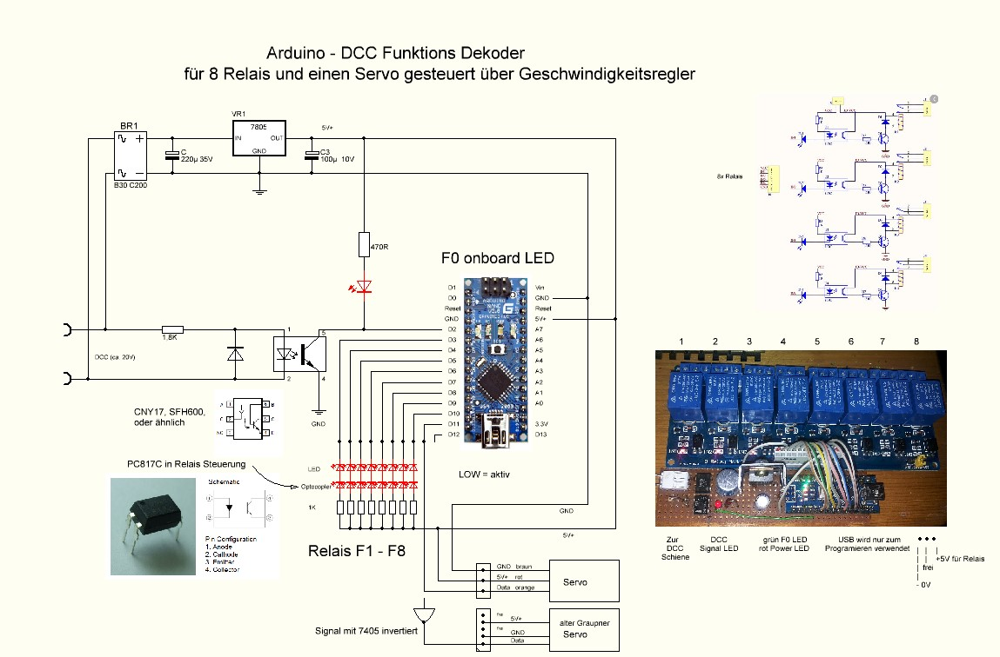
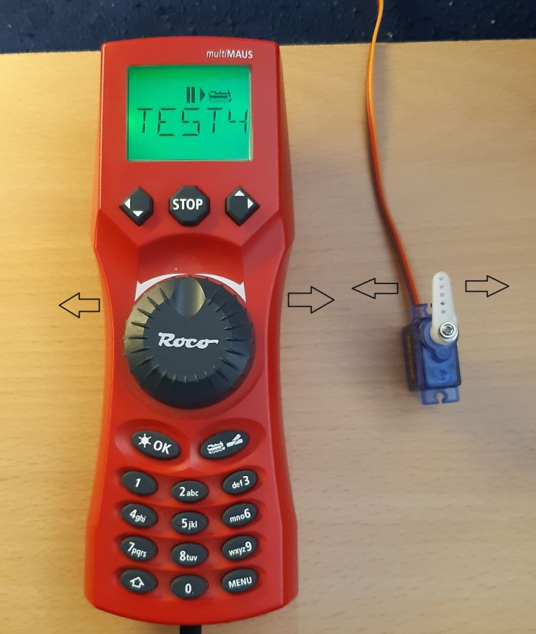

für die Relaisteuerung verwende ich einen Arduino Nano als DCC Decoder, welcher mit einer Lok Adresse und den Funktionstasten F0, F1 - F12 die Relais ansteuert.
bis Z21PG V4.96 funktionierte dieses Sketch: "RB_DCC_Decoder_Function.ino" mit Bibliothek: "DCC_Decoder.h" aus der "Arduino_DCC_S88.zip" von 2016-08-14 problemlos.
Quelle:
rudysmodelrailway - Arduino + ATtiny DCC Decoder / DCC Sniffer / S88 Software download (Oktober 2015) (externer Link)
meine abgeändertes Sketch
RB_DCC_Decoder_Function.ino (aktualisiert 10.2021),
Link zu der verwenden DCC_Decoder.h Library:
DCC_Decoder.h
(externer Link)
ab Z21PG V4.98 wurde auf ein Decoder Sketch mit der NmraDcc.h Bibliothek gewechselt. (externer Link)
dieses Sketch funktioniert nun mit allen Z21PG Versionen.
Relais12_Dec_17LED_1Ftn.zip (aktualisiert 11.2023)
und Relais welchen über eine Lok Adresse mit den Funktionstasten F1 - F8 gesteuert.
Sketch für Nano DCC Decoder mit Servo. _My_DCC_Servo_Decoder.zip (aktualisiert 07.2024)
 